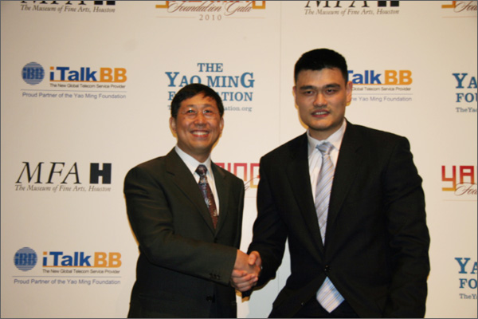
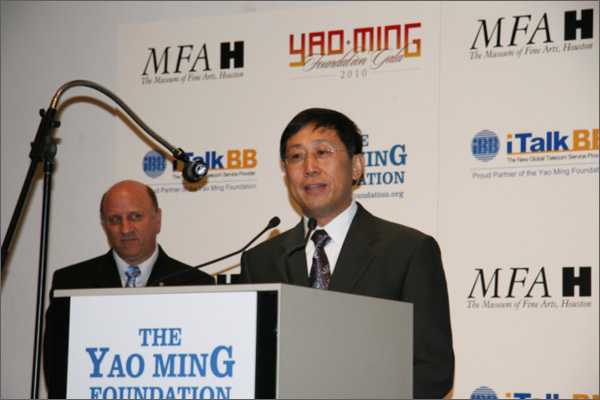

共同成就，我们在一起 - iTalkBB携手姚明及其基金会共同创建美好明天!
(美国维吉尼亚州维也纳讯)
得克萨斯州休斯顿11月17日讯 - iTalkBB新电信携手姚明及其基金会于11月17日在休斯顿艺术博物馆隆重举行记者发布会，宣布iTalkBB新电信正式成为姚明基金会2010年慈善晚宴冠名赞助。著名NBA球星姚明和iTalk Global CEO赵捷等出席了新闻发布会。 2010年姚明基金会慈善晚宴将于1月30日在休斯敦艺术博物馆举行。带伤出席新闻发布会的姚明表示，姚明基金会将进一步致力于服务休斯顿小区工作和儿童教育等，基金会最近的捐款将有一部分用于建设遭受台风袭击的得克萨斯湾区的运动球场等。
姚明表示他很高兴此次能与iTalkBB合作，进一步推广儿童教育及中华文化。iTalk Global CEO赵捷表示：iTalkBB新电信与姚明基金会的合作秉承了iTalkBB的一贯宗旨--"为海外华人提供更好的生活！"鼓励和推广华裔儿童教育，一向是iTalkBB新电信回馈华人小区的重点。曾经在2008年，iTalkBB 新家庭电话就特别 与全美中文学校联合举办了"中文作文比赛"，并全额赞助了8位获奖的华裔学生参加iTalkBB"寻根之旅"。iTalkBB新电信将赞助姚明基金会的2010年年度慈善晚宴，希望与姚明及其基金会共同努力，为华裔社会做出更多的贡献。
新闻发布会结束后，iTalkBB CEO赵捷先生与姚明亲切握手，愉快交流。作为姚明 基金会慈善晚宴的冠名赞助及合作伙伴，iTalkBB基于双方共同的理念，强强连手，将为海外华人小区提供更直接，更有效的服务，尤其是对海外华裔儿童而言，将会有更为深远的影响。 "共同成就，我们在一起"iTalkBB携手姚明及其基金会为海外华人共同创造美好明天。
 
有关活动详情，欢迎拨打24小时中文免费服务热线1－877－482－5522，或登录网站www.iTalkBB.com。
关于 iTalkBB：
iTalkBB新电信是享誉全美的优秀通讯品牌，是国际电讯行业的领导和先驱。其以顶级全球网络和前沿技术为依托，以最具竞争力的价格为客户提供高质、清晰的本 地、国内及国际长途电话服务，以及高清中文电视直播、回播与点播服务。其电话业务能完全取代传统家庭电话，并享受多重免费提供的附加功能如来电等待、三方通 话、来电显示、呼叫转移等。另有独一无二的功能——中国大陆、台湾、香港、南韩当地号码，当地亲友只要拨打此号码，就能接通到在美国的亲友，而无需支付国际 长途费用 。iTalkBB的高清中文电视服务，自问世以来便受到了广泛的好评和欢迎。超过五十个热门频道支持实时直播与48小时回看，海量最新电影电视剧综艺节目免 费无限点播，让用户以最低价格尽享华语娱乐。iTalkBB新电信将不断努力，与您共同成就更美好的生活。iTalkBB设有24小时中英文的客户服务热线: 1-877-482- 5522和官方网站www.iTalkBB.com，一年365天提供不间断的服务与更多信息的查询。